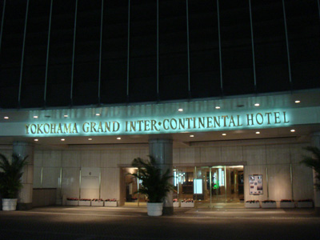
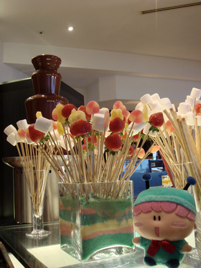
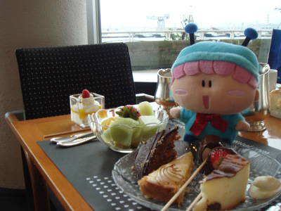
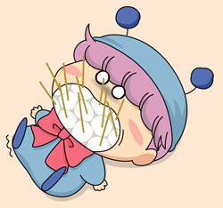
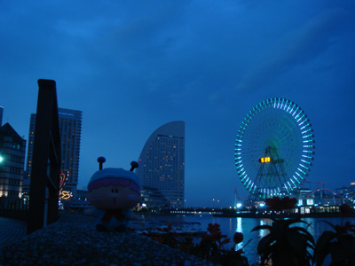

2007年10月8日（祝） 15:30～
前回の妖精なりきりツアーで心残りとなってしまったチョコファウンテンでの撮影、これを行うために再びぴろこさん、multalさん、そして私の３人で再び妖精なりきりツアーを企画しました。題して『妖精なりきりツアーパート２！』（そのまんま・・・^^;）
今回は場所を変えて、横浜のみなとみらいにあるインターコンチネンタルホテルへ行きました。そのホテル内にある「オーシャンテラス」が今回のターゲットです。混雑が予想されましたが、３連休の最終日ということもあってか店内は割と空いていて、撮影のための障害もなく準備は万端です。

インターコンチネンタルホテル
（2007/10/15撮影）

お店に入ってすぐに見えるのは・・・
（2007/10/15撮影）
私たちがお店に入って真っ先に見たものは・・・チョコファウンテンの泉がぶわぁーーっとわき上がる瞬間！（それまでチョコの泉は停止していました）。早く写真を撮りたい思いをおさえながら席に案内されるとすぐにぬいぐるみを持ってスイーツバーへ移動、いきなり撮影モード全開です。
そして予想もしていなかった二度目の感動がありました。チョコファウンテン向けに何と串に刺さったマシュマロがあるではないですか！！アニメ１２３話「お菓子のつけもの」でムルモとパピィがバーベキューにしていたあの串マシュマロですよ！前回のチェッカーズの経験でイチゴなどのフルーツだけがあるものだと思っていただけに、３人とも興奮でかなり挙動が怪しかったはずです。

チョコマシュマロは初めて食べるでしゅ

このマシュマロはボクがぜ～んぶいただくでしゅ！

うるさいパピィは今日は呼ばなかったでしゅ
 この後串マシュマロやたくさんのケーキに飽きたらず、山盛りのフルーツやサンドイッチまでしっかり食べて、今回もまた妖精に少し近づけたことと思います。
とにかく今回はチョコファウンテンでの串マシュマロには驚かされました。たくさんの夢を与えてくれるスイーツバーはまだまだ奥が深そうで、またいつか別の場所でもチャレンジしたいです。

お腹いっぱい食べた後はお散歩でしゅ
(2007/10/16)